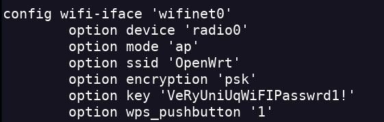
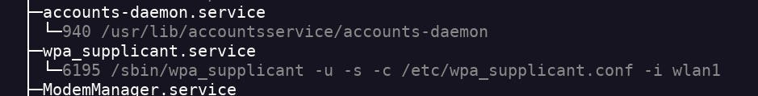
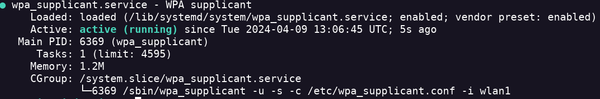
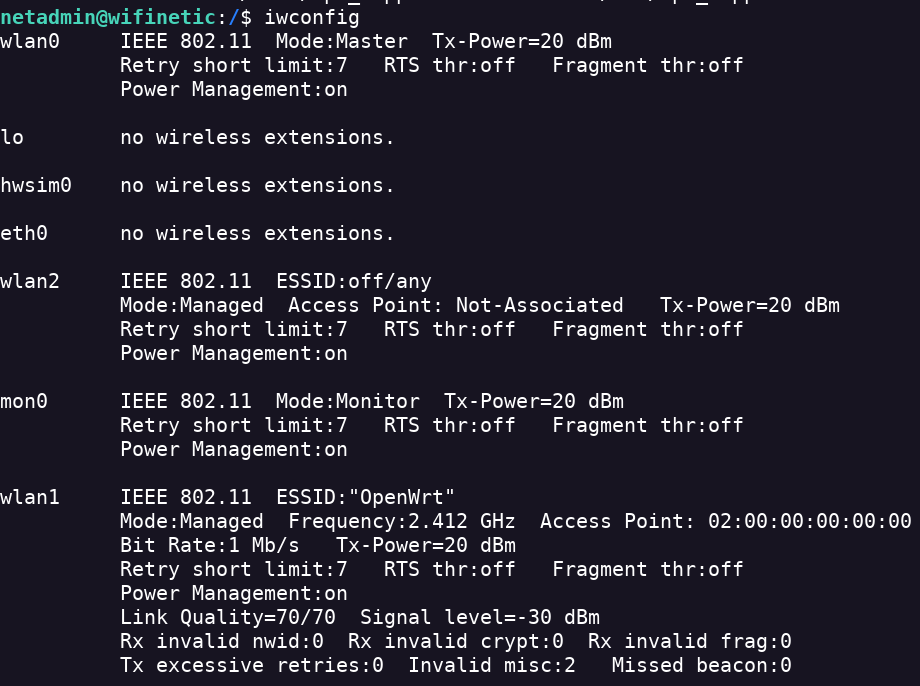
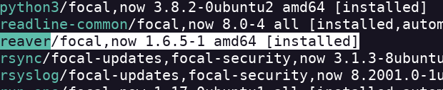
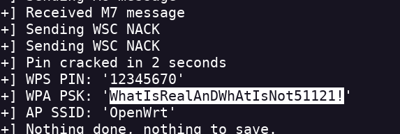
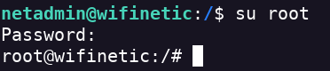

The engagement began with a full port scan to identify all exposed services on the target system.
nmap 10.10.11.247 -Pn -sV -sC -p- --open -oN scan.txtThe scan revealed two available services: FTP and SSH.
Thanks to the default scripts enabled with -sC, anonymous FTP access was detected, along with several downloadable files.
Access to the FTP service was obtained using the anonymous user.
ftp 10.10.11.247The local download directory was changed to store the retrieved files.
ftp> lcd /home/sergux/Desktop/htb/boxes/wifinetic/After reviewing the available files, non-relevant data was discarded and only potentially useful artifacts were analyzed.
Among the downloaded files, a couple of email addresses and a phone number were identified.
The archive backup-OpenWrt-2023-07-26.tar was extracted for further inspection.
tar -xf backup-OpenWrt-2023-07-26.tarInside the extracted content, a passwd file was found, revealing information about existing users.
Further analysis of the configuration files led to the discovery of the wireless file, which contained a plaintext password.

Using the recovered credentials, an SSH connection was attempted with the user netadmin.
ssh netadmin@10.10.11.247The authentication was successful, providing a shell on the target system.
Once logged in, the user flag was located and retrieved.
Privilege escalation opportunities were initially checked using sudo -l, but no direct misconfigurations were found.
Network interfaces were enumerated to better understand the system’s environment.
ifconfigSeveral wireless interfaces were identified, including mon0, which appeared to be configured in monitor mode.
Active services were then reviewed.
systemctl statusAmong the running services, wpa_supplicant stood out as particularly interesting.

Additional details about this service were gathered.
systemctl status wpa_supplicant.service
Although direct access to wpa_supplicant.conf was not permitted, wireless interface information was still accessible.
iwconfig
The interface wlan1 was associated with an access point, and its BSSID was disclosed.
The BSSID, or Basic Service Set Identifier, is the MAC address of the wireless access point and is required to interact with the network.
To proceed, it was necessary to determine whether any wireless attack tools were installed on the system.
A review of installed packages was performed.
apt list --installedThis revealed that the tool reaver was available on the machine.

Since reaver was unfamiliar, its usage information was consulted using the help option.
An initial attempt to run it against wlan1 failed.
The attack was then launched correctly using the monitor interface mon0 and the previously identified BSSID.
reaver -i mon0 -b 02:00:00:00:00:00 -vvThe tool successfully recovered a wireless password.

The obtained password was tested by switching to the root user.
su root
The password was valid, granting root access.
With full privileges obtained, the root.txt flag was accessed, completing the compromise.